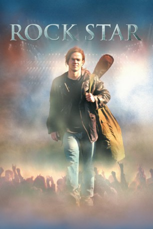
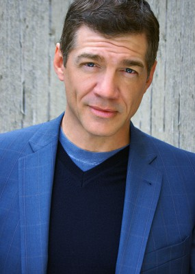

#2881 Rock Star
 
 IMDB-Wertung: 6.2 / 10
IMDB-Wertung: 6.2 / 10  Metascore: 54
Metascore: 54 
Chris Cole ist leidenschaftlicher Fan der Heavy Metal-Formation “Steel Dragon”. Mit seiner eigenen Band “Blood Pollution” spielt Chris alle ihre Songs nach, denn zum großen Kummer seiner Freundin und Managerin Emily hat er es irgendwann aufgegeben, eigene Songs zu schreiben. Doch dann bekommt Chris plötzlich die Chance, von der alle Fans träumen: Er soll “Steel Dragon”-Frontmann Bobby Beers ersetzen! Für Chris beginnt ein nie abreißender Trip aus Sex, Drugs & Rock’n’Roll. Über Nacht wird er zum Star, der ultimative Metal-Gott. Doch an der Spitze des Ruhms und am Ende aller Träume angekommen, hat er mehr verloren als gewonnen…
Jahr: 2001
Dauer: 106 Minuten
FSK: 12
Land: USA Studio: Warner Bros.Tonspuren: DD2.0 - ,
Untertitel:
Auflösung: 1080p (1920x800) Größe: 8120 MB
Genre: Drama, Musik, Komödie
Regisseur: Stephen Herek
Drehbuch: John Stockwell
Soundtrack: Trevor Rabin
Darsteller:
 Mark Wahlberg als Chris 'Izzy' Cole
Mark Wahlberg als Chris 'Izzy' Cole Jennifer Aniston als Emily Poule
Jennifer Aniston als Emily Poule Dominic West als Kirk Cuddy, Steel Dragon Guitarist
Dominic West als Kirk Cuddy, Steel Dragon Guitarist- Zakk Wylde als Ghode, Steel Dragon Guitarist
 Timothy Spall als Mats, Steel Dragon Road Manager
Timothy Spall als Mats, Steel Dragon Road Manager- Brian Vander Ark als Ricki Bell, Blood Pollution Bassist
 Timothy Olyphant als Rob Malcolm, Blood Pollution Guitarist
Timothy Olyphant als Rob Malcolm, Blood Pollution Guitarist Dagmara Dominczyk als Tania Asher, Steel Dragon Public Relations
Dagmara Dominczyk als Tania Asher, Steel Dragon Public Relations-  Matthew Glave als Joe Cole
 Michael Shamus Wiles als Mr. Cole
Michael Shamus Wiles als Mr. Cole Beth Grant als Mrs. Cole
Beth Grant als Mrs. Cole Jason Flemyng als Bobby Beers, Steel Dragon Lead Singer
Jason Flemyng als Bobby Beers, Steel Dragon Lead Singer- Carey Lessard als Nina
- Kristin Richardson als Samantha
- Jamie Williams als Mason Bell
 Keith Loneker als Roadie #1
Keith Loneker als Roadie #1- Kara Zediker als Marci
- Stephan Jenkins als Bradley, Black Babylon Lead Singer
 Vitamin C als Guitarist in Crowd Outside Mansion
Vitamin C als Guitarist in Crowd Outside Mansion- Gregory Hinton als Bouncer
- Sonya Stephens als Nurse
- Rachel Hunter als A.C.'s Wife
- Heidi Mark als Kirk's Wife
- Carrie Stevens als Ghode's Wife Daphne
- William Martin Brennan als Office Worker
- Lorna Scott als Mrs. Andrews
- Jennifer Rovero als Topless Cutie #1
- Natalie Raynes als Topless Cutie #2
 Jamal Weathers als Scalper
Jamal Weathers als Scalper- Eric Weinstein als Roadie #2
- Linda Cevallos als Roxy Dancer
- Brian Friedman als Roxy Dancer
- Ursula Whittaker als Roxy Dancer
- Zachary Woodlee als Roxy Dancer
- Deana Molle' als Groupie #2
- Camille Anderson als Elevator Hottie #1 , uncredited
- Dan Andreiu als Roker , uncredited
- Stacy Bellew als Cassie , uncredited
- Johnny Bolton als Crazed Fan , uncredited
- Emmy Collins als Roadie , uncredited
- Devin Corey als Fighting Rocker , uncredited
- Teresa Couch als Fan at Good Machine Club , uncredited
- Gia Franzia als Bar Patron , uncredited
- Mylo Ironbear als Steel Dragons Fan , uncredited
- Elke Jeinsen als Concert After-Party Guest , uncredited
- Soraya Kelley als VIP Girl , uncredited
- Jill Kocalis als Poolside Cutie , uncredited
- Valerie Landsburg als Concert After-Party Guest , uncredited
- Steve Larson als Sound Engineer , uncredited
- Deborah Leydig als Marjorie , uncredited
Datei: X:\2001\Rock Star (2001, FSK12, 1920x800).mkv seit 29.12.2015
Festplatte: HD 1996-2002
 Es gibt insgesamt 102 Filme in der Gruppe '2001'
Es gibt insgesamt 102 Filme in der Gruppe '2001'